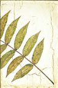
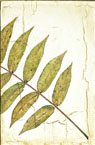

HOA MỘC LAN
Ở Nhật Bản có một người con gái tên là Cây cỏ mồ côi cả cha lẫn mẹ. Nhà nghèo, ngay từ khi còn nhỏ nàng đã phải tự đi làm để kiếm sống.Nàng phải làm hoa giấy đem ra phố bán. Nhưng hoa bán đã nhiều, mà tiền thu về chẳng đáng là bao. Khi đã ra dáng một thiếu nữ. Cây cỏ cũng không có đủ tiền sắm nổi một bộ kimôno mà các cô con nhà quý phái vẫn mặc.
Một đêm nọ khi Cây cỏ đang mải làm việc trong phòng của mình, bỗng có một con vẹt bay đến đậu trên bậc cửa sổ. Đôi cánh màu xanh của nó đã nhợt nhạt, có lẽ nó đã già song vẫn còn đủ minh mẫn và biết nói tiếng người.
- Đừng đuổi ta, ta sẽ tiết lo cho nàng một điều bí mật về cách làm giàu.
- Vẹt yêu quý ơi, cớ sao ta lại đuổi mi – Cây cỏ buồn bã mỉm cười - ở đời ta chẳng còn biết thộ lộ tâm tình với ai, thế mà mi lại nói được tiếng người. Cứ ở lại đây, cùng chia nghèo, sẻ khó với ta, còn sự giàu sang, phú qúy tốt nhất là chẳng nên màng tới, vì ta rất xa lạ với chuyện ấy.
- Đa tạ Cây cỏ tốt bụng - Vẹt gật gù- Trước khi đi tìm chủ mới, ta đã chăm chú theo dỏi các cô gái bán hoa, và ta đã thấy nàng tặng bông hoa đẹp nhất của mình cho một cô gái nghèo như thế nào rồi. Cô gái nghèo ấy không có tiền nhưng lại rất muốn làm cho người bà ốm yếu của mình được thanh thản hài lòng. Nhưng vì sao ngươi lại phải đi t́m chủ mới? – Cây cỏ hỏi - Phải chăng chủ củ không tốt với mi?
- Bà ta đã qua đời - Vẹt đau đơn báo tin, rồi im lặng giây lát
- Bà ta chết vì tham lam.
- Bà ấy nghèo lắm a? – Cây cỏ hỏi tiếp.
- Không, rất giàu là đằng khác. Song với bà như thế còn quá ít. Bà đã bán đến giọt máu cuối cùng để lấy vàng - Vẹt nguẩy vẻ trách móc.
- Đổi máu lấy vàng là thế nào, ta không hiểu? – Cây cỏ ngạc nhiên.
- Chuyện là thế này. Bà chủ của ta cũng làm nghề bán hoa giấy như nàng, song có một mụ phù thuỷ đã tiết lộ cho bà một bí mật về cách làm cho hoa giấy trở thành hoa tươi, nghĩa là phải lấy máu của mình tiếp sức cho các cành hoa. Chính nàng cũng thừa hiểu hoa tươi quý như thế nào rồi. Chẳng bao lâu bà chủ trở nên giàu có. Lúc đó mụ phù thuỷ đã báo trước cho bà ta rằng, dù thế nào cũng chớ có hiến đến giọt máu cuối cùng. Nhưng với bà chủ của ta, dầu có tích góp được bao nhiêu của cải cũng vẫn cứ la ít. Và thế là khi có một vị khách ngoại bang hứa cho bà một khoản tiền lớn nếu bà bằng lòng tiếp thêm sinh lực cho hoa. Bà chủ đã không ngần ngại ngay ca3 đến giọt máu cuối cùng để có thêm nhiều tiền và bà đã phải chuốc lấy cái chết. Số của cải bà để lại trở thành miếng mồi ngon cho đám họ hàng xâu xé nhau. …

 
